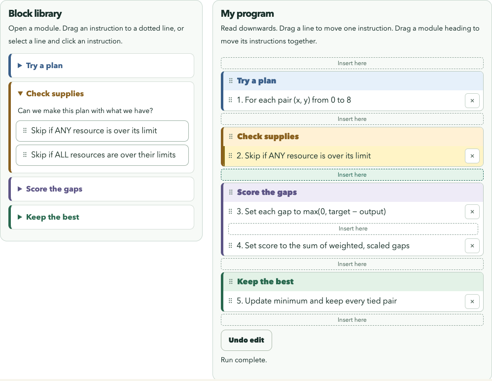

ECO QUEST / Campus Eco Fair · Foundation · About 5 minutes
Teach one block at the campus fair
Pikachu wants to turn reclaimed paper into bookmarks and notebooks. The class has 16 person-hours. One bookmark batch takes one hour and one notebook batch takes two. Learners will teach the computer to check resources before it scores a plan’s goal shortfalls.
Ask “Can we make one bookmark batch and eight notebook batches?” Students calculate 1 + 2 × 8 = 17 hours with only 16 available. Choose “Skip this plan.”
Run
The starter scores this plan 0.25. Ask students to point to the empty slot in the diagram. Click “Fill the empty slot.”
Edit
Drag “Skip if every limit is exceeded” into the dotted space. The score stays at 0.25 because the budget fits and only the time limit is exceeded. Drag “Skip if any limit is exceeded” into the same space. The same plan is now skipped.
Retest
Click “Run the legal plan.” Two bookmark batches and seven notebook batches take exactly 16 hours and fit the other resources. The program scores this plan 1. Choose “Save my test record.”
Dropping a rule in the slot runs the edited program. Clicking the rule works too.
ECO QUEST / Foundation · independent practice
Build and debug a four-module flow
Open the full editor in the Campus Eco Fair. Ask partners to name what goes into each module and what comes out.
Try a plan → Check supplies → Score the gaps → Keep the best
Repair
Run the starter with (1, 8) and predict Skip. Open Check supplies. Drag “Skip if ANY resource is over its limit” onto the dotted line before line 2. Run again and use Next instruction to find where it stops.
Change the sequence
Drag the Score the gaps heading above Try a plan. Both scoring instructions move together. Predict the error, then run. The interpreter asks for a loop on line 1. Choose Undo edit, rerun, and explain why the loop comes first.
Test a boundary
Set the pair to (2, 7). Choose Expect score and enter 1. Run and follow the instructions. All 16 available hours can be used. Exactly reaching the limit is allowed.
Collect evidence
Ask learners to save their run history and explain why both inputs are needed. In a different mission, pick a new pair that breaks just one limit and make a fresh prediction.

The highlighted row shows the second instruction reached for (1, 8).